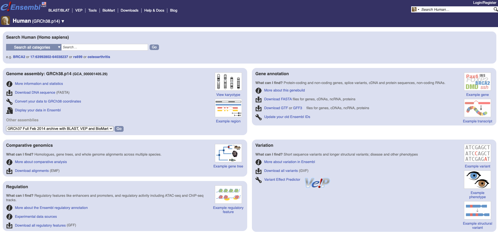

How to run bioinformatics analysis on Tufts HPC
Author: Shirley Li, xue.li37@tufts.edu
Date: 2024-10-07
Objectives
- The primary goal of this tutorial is to introduce participants to bioinformatics on a high-performance computing (HPC) cluster.
- By the end of this tutorial, participants will: Understand basic command-line operations.
- Be familiar with common bioinformatics file formats (e.g., FASTA, FASTQ, SAM, BAM). - Gain hands-on experience with bioinformatics tools and workflows.
Getting Started
Prerequisites
- Basic understanding of biology and bioinformatics
- Familiarity with the command line
- Access to an HPC cluster (e.g., login credentials, necessary software installations)
Setup
-
Connecting to the Cluster through terminal or Open OnDemand.
-
Start an interactive session, go from log in mode to compute mode.
srun -p interactive -n 1 --time=4:00:00 --mem=32g --cpus-per-task=8 --pty bash
- Copying Sample Data
You can use your lab storage or your home directory (only for this workshop).
cd /cluster/tufts/XXlab/utln/
Copy example data to your directory.
cp -r /cluster/tufts/workshop/demo/bio_2024 ./
cd bio_2024
Let's take a look at the files using ls
genomics_data other raw_fastq README.txt reference_data
For this workshop, we will store the data in our home directory since its small in size. However, in the future, avoid using your home directory for data storage. Always utilize your lab's designated storage space instead. Otherwise, your home directory will fill up quickly, limiting your ability to perform various tasks.
Overview of the input files
FASTA file
FASTA is a text-based format for representing nucleotide sequences or protein sequences. It is widely used in bioinformatics for sequence data storage and analysis. Each sequence in a FASTA file is represented by a header line starting with a '>', followed by lines of sequence data.
- A typical FASTA file has the following structure:
- Header Line: This line starts with a '>' character, followed by a description or identifier of the sequence.
- Sequence Data: The nucleotide or amino acid sequence, which can span multiple lines.
- Example:
cat other/rcsb_pdb_5XUS.fasta
What does this file contain?
>5XUS_1|Chain A|LbCpf1|Lachnospiraceae bacterium ND2006 (1410628)
GSHMSKLEKFTNCYSLSKTLRFKAIPVGKTQENIDNKRLLVEDEKRAEDYKGVKKLLDRYYLSFINDVLHSIKLKNLNNYISLFRKKTRTEKENKELENLEINLRKEIAKAFKGNEGYKSLFKKDIIETILPEFLDDKDEIALVNSFNGFTTAFTGFFDNRENMFSEEAKSTSIAFRCINENLTRYISNMDIFEKVDAIFDKHEVQEIKEKILNSDYDVEDFFEGEFFNFVLTQEGIDVYNAIIGGFVTESGEKIKGLNEYINLYNQKTKQKLPKFKPLYKQVLSDRESLSFYGEGYTSDEEVLEVFRNTLNKNSEIFSSIKKLEKLFKNFDEYSSAGIFVKNGPAISTISKDIFGEWNVIRDKWNAEYDDIHLKKKAVVTEKYEDDRRKSFKKIGSFSLEQLQEYADADLSVVEKLKEIIIQKVDEIYKVYGSSEKLFDADFVLEKSLKKNDAVVAIMKDLLDSVKSFENYIKAFFGEGKETNRDESFYGDFVLAYDILLKVDHIYDAIRNYVTQKPYSKDKFKLYFQNPQFMGGWDKDKETDYRATILRYGSKYYLAIMDKKYAKCLQKIDKDDVNGNYEKINYKLLPGPNKMLPKVFFSKKWMAYYNPSEDIQKIYKNGTFKKGDMFNLNDCHKLIDFFKDSISRYPKWSNAYDFNFSETEKYKDIAGFYREVEEQGYKVSFESASKKEVDKLVEEGKLYMFQIYNKDFSDKSHGTPNLHTMYFKLLFDENNHGQIRLSGGAELFMRRASLKKEELVVHPANSPIANKNPDNPKKTTTLSYDVYKDKRFSEDQYELHIPIAINKCPKNIFKINTEVRVLLKHDDNPYVIGIDRGERNLLYIVVVDGKGNIVEQYSLNEIINNFNGIRIKTDYHSLLDKKEKERFEARQNWTSIENIKELKAGYISQVVHKICELVEKYDAVIALEDLNSGFKNSRVKVEKQVYQKFEKMLIDKLNYMVDKKSNPCATGGALKGYQITNKFESFKSMSTQNGFIFYIPAWLTSKIDPSTGFVNLLKTKYTSIADSKKFISSFDRIMYVPEEDLFEFALDYKNFSRTDADYIKKWKLYSYGNRIRIFRNPKKNNVFDWEEVCLTSAYKELFNKYGINYQQGDIRALLCEQSDKAFYSSFMALMSLMLQMRNSITGRTDVDFLISPVKNSDGIFYDSRNYEAQENAILPKNADANGAYNIARKVLWAIGQFKKAEDEKLDKVKIAISNKEWLEYAQTSVKH
>5XUS_2|Chain B|crRNA|synthetic construct (32630)
AAUUUCUACUAAGUGUAGAUGGAAAUUAGGUGCGCUUGGC
>5XUS_3|Chain C|DNA (29-MER)|synthetic construct (32630)
GCCAAGCGCACCTAATTTCCTAAAGGACG
>5XUS_4|Chain D|DNA (5'-D(*CP*GP*TP*CP*CP*TP*TP*TP*A)-3')|synthetic construct (32630)
CGTCCTTTA
Counting the number of sequencies in a FASTA file:
grep -c "^>" other/rcsb_pdb_5XUS.fasta
- Common Use: The FASTA format is typically used to store reference genome sequences, which can be for a whole genome, specific chromosomes, or individual genes. This format is essential for tasks like sequence alignment, variant calling, and genome assembly.
FASTQ file
FASTQ is a text-based format used to store both nucleotide sequences and their corresponding quality scores. It is widely used in bioinformatics, particularly for storing data from high-throughput sequencing technologies.
- Structure of a FASTQ File A FASTQ file consists of a series of entries, each representing a single read. Each entry has four lines:
- Header Line: Starts with '@' followed by a sequence identifier and an optional description.
- Sequence Line: The raw sequence of nucleotides (A, T, C, G).
- Separator Line: Starts with a '+' character and can optionally be followed by the same sequence identifier and description as in the header line.
- Quality Line: Encodes the quality scores for the sequence in the sequence line, using ASCII characters.
- Example:
head raw_fastq/Irrel_kd_1.subset.fq
Warning: Do not use cat to view fq files, as they are often very large.
@HWI-ST330:304:H045HADXX:1:1214:19169:32660
CTTTTTTGCTGGAACTTTAGCAGCAGCAGCAGCAGCAGCAGCAGCAGCAGCAGCAGCAGCAGCAGTACCCTTAGTACCAGGTGCTTTTTTGGGAGAAGCT
+
CCCFFFFFGGHGHJJJJJJJIEHIIIIIGIIIJJHIJIIJJJJJGGGIJJJJJJJJJJGHGHHFBCEFFEEEEE;@@CDDD5>ACDDDDDDBB?BDDDCA
@HWI-ST330:304:H045HADXX:2:1212:14280:80867
CCCTAATGATGATATATGGATCAAAAGTCTTCTTTGTAGTACAAACAGTCATGCTGCCTTCGATCAGGTCCAGGGTTGCATTAACATGATGTTCATTTAA
+
:?@DDDDFDHHGHJIGBFGIGIIIGDE:CFIHIIJE1?>CEFGCEGFG?FGI?F@FHCCGIHIIJGHC@FHHGEB@9AEEHFFFEDFCCACEEEEDDDDD
@HWI-ST330:304:H045HADXX:2:2111:14933:89958
GGCATCCATGTTCTTGCCCAAAACCTTGGTTACAGCAATCTGATACTTCTTTTGTGTGGGCTGGCATAGGTCAATGAGGCAGATCGGAAGAGCACACGTC
You can also use less to view the file and press Q key to exit.
FASTQC
A quality control tool used in bioinformatics to assess the quality of high-throughput sequencing data, typically for next-generation sequencing (NGS) reads, like those in FASTQ files. It provides a series of quality checks on raw sequence data, helping researchers identify issues before proceeding with downstream analysis like alignment, variant calling, or transcript quantification.
Example usage:
module load fastqc/0.12.1
fastqc raw_fastq/Irrel_kd_1.subset.fq # It will generate a html report
Check this article for how to interpret fastqc result.
GTF file
GTF (Gene Transfer Format) is a file format used to hold information about gene structure. It is widely used in genomics to store annotations of genomic features such as genes, exons, and regulatory elements. GTF is similar to GFF (General Feature Format) but includes additional standardized attributes.
Structure of a GTF File:
A GTF file is a tab-delimited text file with one line per feature. Each line consists of nine fields:
- seqname: Name of the sequence (e.g., chromosome).
- source: Name of the program that generated the feature.
- feature: Type of feature (e.g., gene, exon, CDS).
- start: Start position of the feature.
- end: End position of the feature.
- score: Score value (can be a dot if not used).
- strand: Strand of the feature (+ or -).
- frame: Frame for coding sequences (0, 1, or 2).
- attribute: A semicolon-separated list of key-value pairs describing the feature.
head reference_data/chr1-hg19_genes.gtf
chr1 unknown exon 14362 14829 . - . gene_id "WASH7P"; gene_name "WASH7P"; transcript_id "NR_024540"; tss_id "TSS7245";
chr1 unknown exon 14970 15038 . - . gene_id "WASH7P"; gene_name "WASH7P"; transcript_id "NR_024540"; tss_id "TSS7245";
chr1 unknown exon 15796 15947 . - . gene_id "WASH7P"; gene_name "WASH7P"; transcript_id "NR_024540"; tss_id "TSS7245";
chr1 unknown exon 16607 16765 . - . gene_id "WASH7P"; gene_name "WASH7P"; transcript_id "NR_024540"; tss_id "TSS7245";
chr1 unknown exon 16858 17055 . - . gene_id "WASH7P"; gene_name "WASH7P"; transcript_id "NR_024540"; tss_id "TSS7245";
chr1 unknown exon 17233 17368 . - . gene_id "WASH7P"; gene_name "WASH7P"; transcript_id "NR_024540"; tss_id "TSS7245";
chr1 unknown exon 17606 17742 . - . gene_id "WASH7P"; gene_name "WASH7P"; transcript_id "NR_024540"; tss_id "TSS7245";
chr1 unknown exon 17915 18061 . - . gene_id "WASH7P"; gene_name "WASH7P"; transcript_id "NR_024540"; tss_id "TSS7245";
chr1 unknown exon 18268 18366 . - . gene_id "WASH7P"; gene_name "WASH7P"; transcript_id "NR_024540"; tss_id "TSS7245";
chr1 unknown exon 24738 24891 . - . gene_id "WASH7P"; gene_name "WASH7P"; transcript_id "NR_024540"; tss_id "TSS7245";
chr1 unknown exon 29321 29370 . - . gene_id "WASH7P"; gene_name "WASH7P"; transcript_id "NR_024540"; tss_id "TSS7245";
chr1 unknown exon 34611 35174 . - . gene_id "FAM138F"; gene_name "FAM138F"; transcript_id "NR_026820"; tss_id "TSS8099";
chr1 unknown exon 34611 35174 . - . gene_id "FAM138A"; gene_name "FAM138A"; transcript_id "NR_026818"; tss_id "TSS8099";
chr1 unknown exon 35277 35481 . - . gene_id "FAM138F"; gene_name "FAM138F"; transcript_id "NR_026820"; tss_id "TSS8099";
chr1 unknown exon 35277 35481 . - . gene_id "FAM138A"; gene_name "FAM138A"; transcript_id "NR_026818"; tss_id "TSS8099";
chr1 unknown exon 35721 36081 . - . gene_id "FAM138F"; gene_name "FAM138F"; transcript_id "NR_026820"; tss_id "TSS8099";
chr1 unknown exon 35721 36081 . - . gene_id "FAM138A"; gene_name "FAM138A"; transcript_id "NR_026818"; tss_id "TSS8099";
chr1 unknown CDS 69091 70005 . + 0 gene_id "OR4F5"; gene_name "OR4F5"; p_id "P9488"; transcript_id "NM_001005484"; tss_id "TSS13903";
chr1 unknown exon 69091 70008 . + . gene_id "OR4F5"; gene_name "OR4F5"; p_id "P9488"; transcript_id "NM_001005484"; tss_id "TSS13903";
chr1 unknown start_codon 69091 69093 . + . gene_id "OR4F5"; gene_name "OR4F5"; p_id "P9488"; transcript_id "NM_001005484"; tss_id "TSS13903";
chr1 unknown stop_codon 70006 70008 . + . gene_id "OR4F5"; gene_name "OR4F5"; p_id "P9488"; transcript_id "NM_001005484"; tss_id "TSS13903";
ch
GTF files are essential for common bioinformatics analyses such as RNA-Seq analysis, genome annotation, and differential expression analysis. They provide the necessary annotation information to map reads to genomic features and to understand the functional elements of the genome.
You can download human gtf file from UCSC Genome Browser https://hgdownload.soe.ucsc.edu/goldenPath/hg38/bigZips/genes/ or Ensembl Genome Browser https://ftp.ensembl.org/pub/release-112/gtf/homo_sapiens/
How to donwload your own reference genome file
- Navigate to ensembl website:
https://useast.ensembl.org/index.html - Select the organisms you are working on. Ex:
Human

-
Choose the file you would like to download: FASTA, GTF or GFF3, ...
-
Always keep an eye on the genome build.
GRCh38is the latest for human genome.
Toy analysis with interactive jobs
Alignment with STAR
Make sure you are in compute node
utln@login-prod-02 # log in node
utln@p1cmp017 # compute node
If not, do the following
srun -p interactive -n 1 --time=4:00:00 --mem=32g --cpus-per-task=8 --pty bash
Load necessary modules
module load star/2.7.11b
Before aligning your FASTQ files, you need to generate an index using the reference genome (.fa file) and the annotation file (.gtf file).
STAR --runMode genomeGenerate \
--genomeDir ./reference_data/ \
--genomeFastaFiles ./reference_data/chr1.fa \
--sjdbGTFfile ./reference_data/chr1-hg19_genes.gtf \
--runThreadN 8
You will see output log like this
Sep 20 11:25:15 ..... started STAR run
Sep 20 11:25:15 ... starting to generate Genome files
Sep 20 11:25:20 ..... processing annotations GTF
!!!!! WARNING: --genomeSAindexNbases 14 is too large for the genome size=249250621, which may cause seg-fault at the mapping step. Re-run geno
me generation with recommended --genomeSAindexNbases 12
Sep 20 11:25:22 ... starting to sort Suffix Array. This may take a long time...
Sep 20 11:25:23 ... sorting Suffix Array chunks and saving them to disk...
Sep 20 11:26:40 ... loading chunks from disk, packing SA...
Sep 20 11:26:47 ... finished generating suffix array
Sep 20 11:26:47 ... generating Suffix Array index
Sep 20 11:27:52 ... completed Suffix Array index
Sep 20 11:27:52 ..... inserting junctions into the genome indices
Sep 20 11:28:17 ... writing Genome to disk ...
Sep 20 11:28:17 ... writing Suffix Array to disk ...
Sep 20 11:28:19 ... writing SAindex to disk
Sep 20 11:28:22 ..... finished successfully
If you do ls -lhtr reference_data , you will see the genome index you just generated.
Align FASTQ Reads to the Reference Genome
First, let's create an folder to store output from STAR:
mkdir star_output
For single-end reads:
STAR --genomeDir ./reference_data/ \
--readFilesIn ./raw_fastq/Irrel_kd_1.subset.fq \
--outFileNamePrefix ./star_output/ \
--runThreadN 8
In our example, we use single-end reads.
For paired-end reads:
STAR --genomeDir ./reference_data/ \
--readFilesIn /path/to/read1.fastq /path/to/read2.fastq \
--outFileNamePrefix ./star_output/ \
--runThreadN 8
Output
Check the outputs:
cd star_output
ls
You will see the following:
Aligned.out.sam Log.final.out Log.out Log.progress.out SJ.out.tab
Aligned.out.sam contains the aligned information.
SAM file
SAM (Sequence Alignment/Map) is a text-based format for storing biological sequences aligned to a reference sequence. It is widely used in bioinformatics for storing large-scale sequencing data, such as that from next-generation sequencing technologies.
A SAM file consists of a header section and an alignment section.
- Header Section: Optional. Contains metadata about the alignments and reference sequences. Header lines start with the '@' character.
- Alignment Section: Contains the aligned sequences and their corresponding information. Each line represents a single alignment and consists of 11 mandatory fields and optional fields.
@HD VN:1.4
@SQ SN:chr1 LN:249250621
@PG ID:STAR PN:STAR VN:2.7.11b CL:/usr/local/bin/STAR-avx2 --runThreadN 8 --genomeDir ./reference_data/ --readFilesIn ./raw_fastq/Irrel_kd_1.subset.fq --outFileNamePrefix ./star_output/
@CO user command line: /usr/local/bin/STAR-avx2 --genomeDir ./reference_data/ --readFilesIn ./raw_fastq/Irrel_kd_1.subset.fq --outFileNamePrefix ./star_output/ --runThreadN 8
HWI-ST330:304:H045HADXX:2:1102:9621:48866 0 chr1 115266503 255 100M * 0 0 CCCTCCTCCACAATCTCAATCATTCCTTGGTACTCAGTCTGTGTTGGATCAACACTCCTCAGGGGGCGAATTACTTTGCCAGAGTAAATGGTGGGATCAG CCCFFFFFHHHHHJJJJJJJJJJJJJJJJJHIIIJJJGIJJIJJJJJJJJJGJJJJJJJJIIIJJJFDDDDDDDDDEDDDDDBB>CDDEEDCDDDDDDDD NH:i:1 HI:i:1 AS:i:98 nM:i:0
HWI-ST330:304:H045HADXX:2:1104:16192:61086 0 chr1 115266503 255 100M * 0 0 CCCTCCTCCACAATCTCAATCATTCCTTGGTACTCAGTCTGTGTTGGATCAACACTCCTCAGGGGGCGAATTACTTTGCCAGAGTAAATGGTGGCATCAG @BCFFFFFHHHHHJJJJJJJJJJJJJJJJJIJJIJJJIIJJJIIJJJJJJIJJHJJJJJJJJJJJJFDDDDDDDDDEDDDDDDD@CCDEED:ABDDDDDD NH:i:1 HI:i:1 AS:i:96 nM:i:1
HWI-ST330:304:H045HADXX:2:1107:5712:34356 0 chr1 115266503 255 100M * 0 0 CCCTCCTCCACAATCTCAATCATTCCTTGGTACTCAGTCTGTGTTGGATCAACACTCCTCAGGGGGCGAATTACTTTGCCAGAGTAAATGGTGGGATCAG @B@FFDFFHFFHHIGIIIGIHJJIJJJJJJCEHIJJJFGHIIJIJJJJJIIJJJJJJJIJJJJIIJFDBBBDDDDDEDDDDDDD>CCDEED>ADDDDDDD NH:i:1 HI:i:1 AS:i:98 nM:i:0
HWI-ST330:304:H045HADXX:2:1113:8407:74596 0 chr1 115266503 255 100M * 0 0
Check this article about how to interpret sam files.
BAM file
The BAM (Binary Alignment/Map) file format is a binary version of the SAM (Sequence Alignment/Map) format. It is used to store aligned sequence data in a more efficient and compressed form.
Convert sam file to bam file:
module load samtools/1.17
samtools view -S -b Aligned.out.sam > Aligned.out.bam
Bam file cannot be read directly, we have to use samtools to view it:
module load samtools/1.17
samtools view Aligned.out.bam | head -n 20
Toy analysis with job scripts
Let's write a slurm script call run_star.sh
#!/bin/bash
#SBATCH -J STAR_JOB # Job name
#SBATCH --time=12:00:00 # Job will run for a maximum of 12 hours (D-HH:MM:SS format)
#SBATCH -p batch # Partition (queue) to submit the job to
#SBATCH -n 1 # Number of tasks (here we only need 1 task)
#SBATCH --mem=32g # Allocate 32 GB of memory for this job
#SBATCH --cpus-per-task=8 # Number of CPU cores allocated for this task
#SBATCH --output=MyJob.%j.%N.out # Output will be saved to a file with job ID (%j) and node name (%N)
#SBATCH --error=MyJob.%j.%N.err # Error will be saved to a file with job ID (%j) and node name (%N)
#SBATCH --mail-type=ALL # Receive email notifications for job status (ALL = start, end, fail)
#SBATCH --mail-user=utln@tufts.edu # Your email to receive notifications
# Load the STAR module
module load star/2.7.11b # Load the specific version of STAR needed for the alignment
mkdir star_output
# Run STAR alignment
STAR --genomeDir ./reference_data/ \ # Specify the directory containing the genome index files
--readFilesIn ./raw_fastq/Irrel_kd_1.subset.fq \ # Input FASTQ file(s) for alignment
--outFileNamePrefix ./star_output/ \ # Output files will be saved in this directory
--runThreadN 8 # Use 8 threads for faster processing
Here is the command to submit job
chmod +x run_star.sh # Makes the script executable
sbatch run_star.sh # Submits the script to the SLURM queue
Use squeue -u yourusername to check job status.
Run job with GPU node
Interactive session
srun -p preempt -n 1 --time=04:00:00 --mem=20G --gres=gpu:1 --pty /bin/bash
You can also specify which gpu node you would like to run jobs on
srun -p preempt -n 1 --time=04:00:00 --mem=20G --gres=gpu:a100:1 --pty /bin/bash
Submit jobs to queue
Example script: align.sh using parabricks to do the alignment.
#!/bin/bash
#SBATCH -J fq2bam_alignment # Job name
#SBATCH -p preempt # Submit to the 'preempt' partition (modify based on your cluster setup)
#SBATCH --gres=gpu:1 # Request 1 GPU for accelerated processing
#SBATCH -n 2 # Number of tasks (2 in this case)
#SBATCH --mem=60g # Memory allocation (60GB)
#SBATCH --time=02:00:00 # Maximum job run time (2 hours)
#SBATCH --cpus-per-task=20 # Number of CPU cores allocated per task
#SBATCH --output=alignment.%j.out # Standard output file (with job ID %j)
#SBATCH --error=alignment.%j.err # Standard error file (with job ID %j)
#SBATCH --mail-type=ALL # Email notifications for all job states (begin, end, fail)
#SBATCH --mail-user=utln@tufts.edu # Email address for notifications
# Load necessary modules
nvidia-smi # Show GPU information (optional for logging)
module load parabricks/4.0.0-1 # Load Parabricks module for GPU-accelerated alignment
# Define variables
genome_reference="/path/to/reference_genome" # Path to the reference genome (.fasta)
input_fastq1="/path/to/input_read1.fastq" # Path to the first paired-end FASTQ file
input_fastq2="/path/to/input_read2.fastq" # Path to the second paired-end FASTQ file
sample_name="sample_identifier" # Sample identifier
known_sites_vcf="/path/to/known_sites.vcf" # Known sites VCF file for BQSR (optional, if available)
output_directory="/path/to/output_directory" # Directory for the output BAM file and reports
output_bam="${output_directory}/${sample_name}.bam" # Output BAM file path
output_bqsr_report="${output_directory}/${sample_name}.BQSR-report.txt" # Output BQSR report path
# Run the Parabricks fq2bam alignment pipeline
pbrun fq2bam \
--ref ${genome_reference} \ # Reference genome (.fasta)
--in-fq ${input_fastq1} ${input_fastq2} \ # Input paired-end FASTQ files
--read-group-sm ${sample_name} \ # Sample name for read group
--knownSites ${known_sites_vcf} \ # Known sites for BQSR
--out-bam ${output_bam} \ # Output BAM file
--out-recal-file ${output_bqsr_report} # Output Base Quality Score Recalibration (BQSR) report
Here is the command to submit job
chmod +x align.sh # Makes the script executable
sbatch align.sh # Submits the script to the SLURM queue
Use squeue -u yourusername to check job status.
Useful links:
https://hbctraining.github.io/Intro-to-shell-flipped/lessons/03_working_with_files.html
https://hbctraining.github.io/Intro-to-rnaseq-hpc-O2/lessons/03_alignment.html